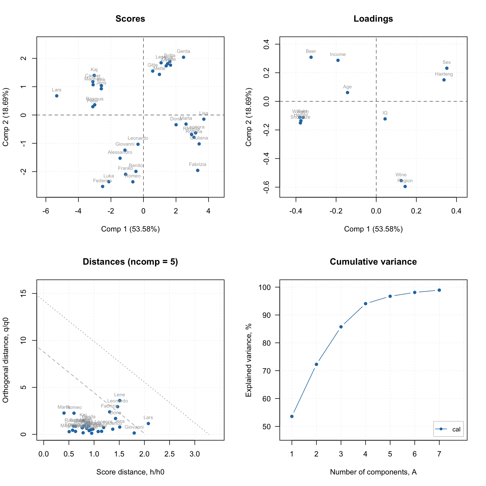
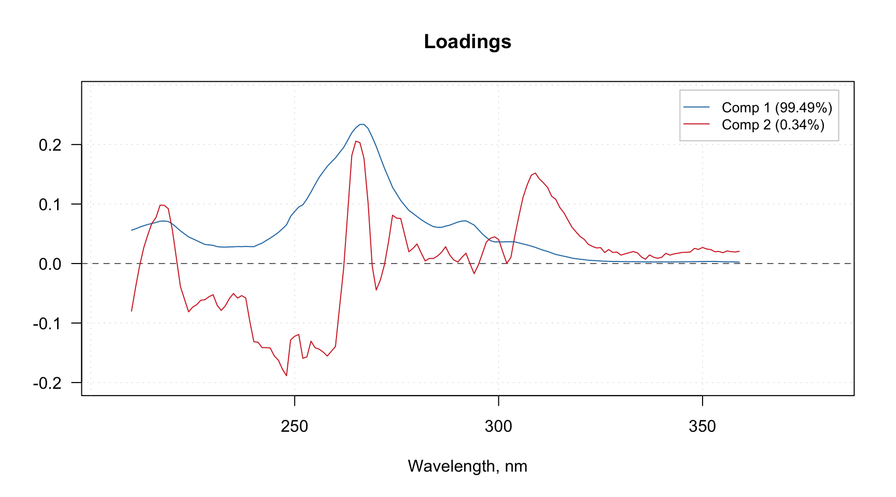
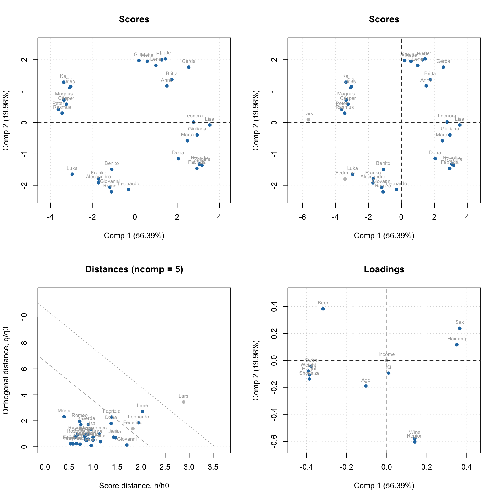
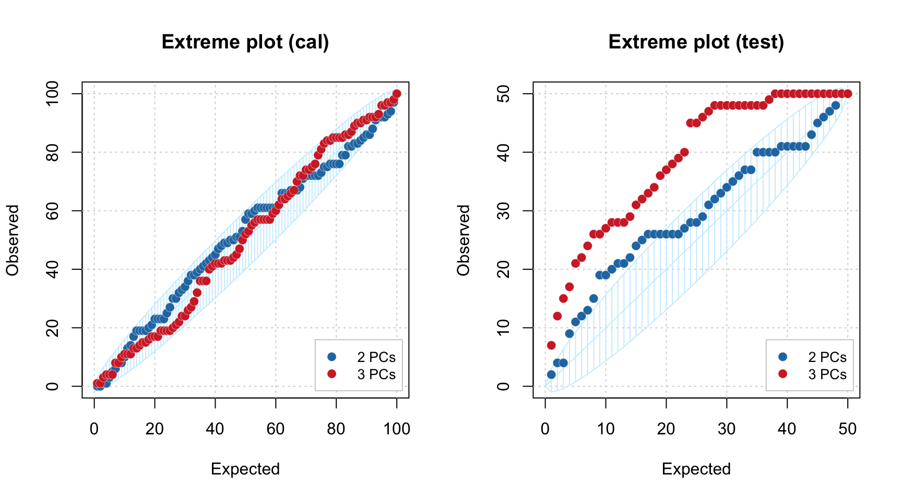
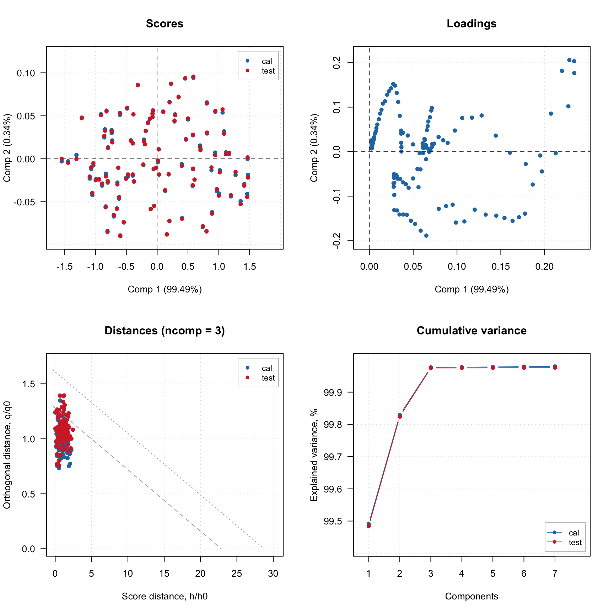
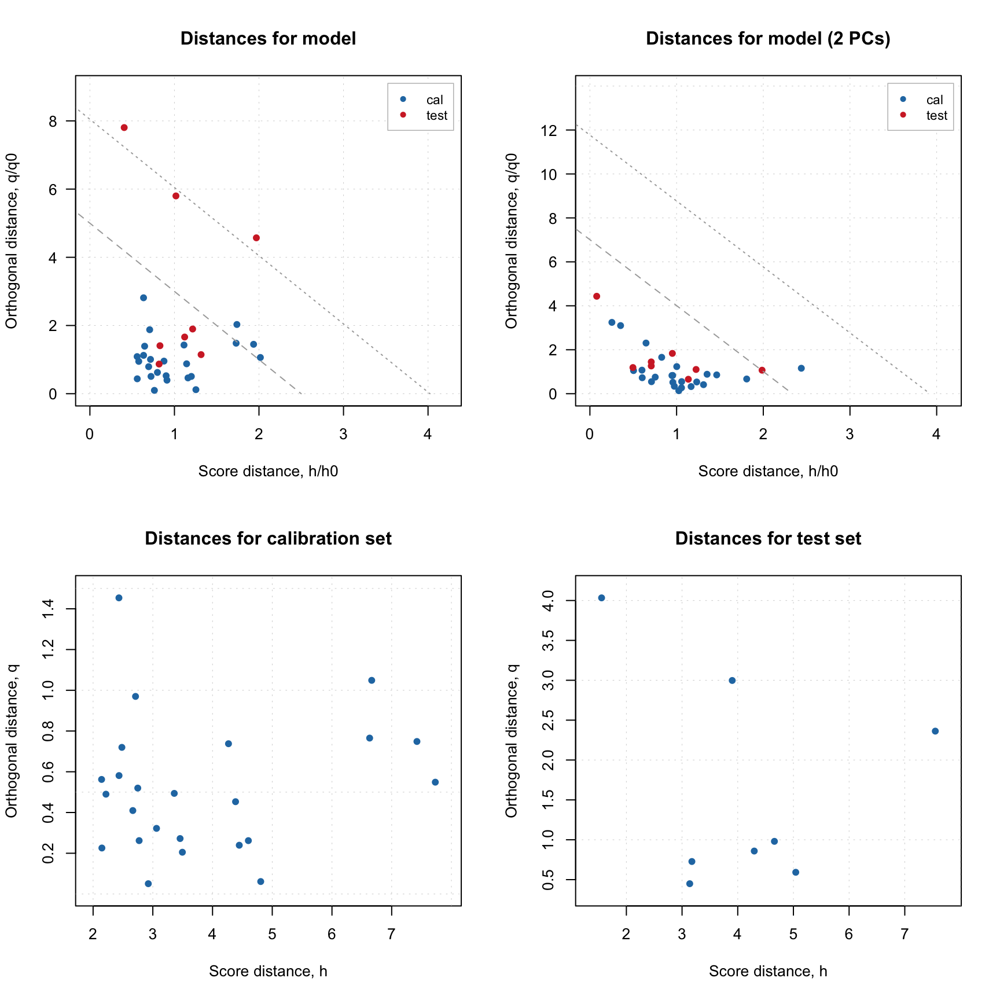

Distances and critical limits
Distance to model and score distance
As it was written in the brief theoretical section about PCA, when data objects are being projected to a principal component space, two distances are calculated and stored as a part of PCA results (pcares object). The first is a squared orthogonal Euclidean distance from original position of an object to the PC space, also known as orthogonal distance and denoted as Q or q. The distance shows how well the object is fitted by the PCA model and allows to detect objects that do not follow a common trend, captured by the PCs.
The second distance shows how far a projection of an object to the PC space is from the origin. This distance is also known as Hotelling T2 distance or a score distance. To compute T2 distance scores should be first normalized by dividing them to corresponding singular values (or eigenvalues if we deal with squared scores). The T2 distance allows to see extreme objects — which are far from the origin. In the package as well as in this tutorial we will also use letter \(h\) to denote this distance, so \(Q\) and \(q\) are for orthogonal distance and \(T^2\) and \(h\) stand for the score distance.
Historically, the distances are called in this package and also in
some other software as Residual distances or just
residuals. Therefore functions, which visualize the
corresponding distances, are called plotResiduals()
(plotXResiduals(), plotYResiduals(),
plotXYResiduals() in PLS based methods). However, this is
not fully correct, and in the text of the tutorial we will refer to them
as distances most of the time. Changing function names though
will lead to large degree of incompatibility.
In mdatools both distances are calculated for all objects in dataset and all possible components. So every distance is represented by \(I \times A\) matrix (will remind here that \(I\) is number of objects or rows in data matrix and \(A\) is number of components in PCA model), the first column contains distances for a model with only one component, second — for model with two components, and so on. The distances can be visualized using method plotResiduals() which is available both for PCA results as well as for PCA model. In the case of model the plot shows distances both for calibration set and test set (if available).
Here is an example, where I split People data to calibration and test set as in one of the examples in previous sections and show distance plot for model and result objects.
data(people)
idx = seq(4, 32, 4)
Xc = people[-idx, ]
Xt = people[idx, ]
m = pca(Xc, 4, scale = TRUE, x.test = Xt)
par(mfrow = c(2, 2))
plotResiduals(m, main = "Distances for model")
plotResiduals(m, ncomp = 2, main = "Distances for model (2 Comp)")
plotResiduals(m$res$cal, main = "Distances for calibration set")
plotResiduals(m$res$test, main = "Distances for test set")
As it was briefly mentioned before, if residual/distance plot is made for a model, it also shows two critical limits: the dashed line is a limit for extreme objects and the dotted line is a limit for outliers. How they are computed is explained later in this section. If you want to hide them, just use additional parameter show.limits = FALSE. You can also change the color, line type and width for the lines by using options lim.col, lim.lty and lim.lwd as it is shown below.
par(mfrow = c(1, 2))
plotResiduals(m, show.limits = FALSE)
plotResiduals(m, lim.col = c("red", "orange"), lim.lwd = c(2, 2), lim.lty = c(1, 2))
It is necessary to provide a vector with two values for each of the argument (first for extreme objects and second for outliers border).
Finally, you can also notice that for model plot the distance values are normalized (\(h/h_0\) and \(q/q_0\) instead of just \(h\) and \(q\)). This is needed to show the limits correctly and, again, will be explained in detail below. You can switch this option by using logical parameter norm. Sometimes, it is also make sense to use log transform for the values, which can be switched by using parameter log. Code below shows example for using these parameters.
par(mfrow = c(2, 2))
plotResiduals(m, norm = FALSE)
plotResiduals(m, norm = TRUE)
plotResiduals(m, norm = TRUE, log = TRUE)
plotResiduals(m, norm = FALSE, log = TRUE)
Critical limits
If PCA model is made for dataset taken from the same population, the orthogonal and score distances can be used to find outliers and extreme objects. One of the ways to do this is to compute critical limits for the distances assuming that they follow certain theoretical distribution.
Critical limits are also important for SIMCA classification as they are directly used for making decision on class belongings. This package implements several methods to compute the limits, which are explained in this section.
Data driven approach
Starting from version 0.10.0, by default the limits are computed using data driven approach proposed and then extended by Pomerantsev and Rodionova.
It was known before, that both distances are well described by chi-square distribution. The distribution in general describes behavior of sum of squared random values taken from standardized normal distribution, which means, that the distances has to be standardized first. The scaling factor as well as number of degrees of freedom (DoF) can be estimated from the distance values — hence the name (data driven).
Since the estimation procedure is identical for the both distances, we will use a generalized version. Let’s say we have a vector of distance values \(u\) (where \(u\) can be either score distance values, \(h\), or orthogonal distance values, \(q\)) for given number of components. Then the scaling factor, \(u_0\) and corresponding DoF, \(N_u\) can be found as:
\[u_0 = m_u = \frac{1}{I} \sum_{i = 1}^{I} u\] \[N_u = \mathrm{int} \bigg( \frac{2u_0^2}{s_u^2} \bigg)\]
Here \(s_u^2\) is a variance of the distances. Then the the normalized distance values will follow chi-square distribution with \(N_u\) degrees of freedom (just replace \(u\) to \(q\) or \(h\) to get the formula for particular distance):
\[N_u \frac{u}{u_0} \propto \chi^2(N_u)\]
However, this does not take into account the fact that \(h\) and \(q\) are, strictly speaking, not independent. It is well known that adding an additional component to PCA model leads to increase of score distance and decrease of orthogonal distance and removing a component has the opposite effect. This relationship can be taken into account by computing a joint or a full distance, \(f\), as follows:
\[f = N_h \frac{h}{h_0} + N_q \frac{q}{q_0}\]
The full distance, \(f\) also follows chi-square distribution with degrees of freedom: \(N_f = N_q + N_h\). The critical limits for the full distance are computed using inverse cumulative distribution function (ICDF) also known as quantile function. For extreme objects (shown on distance plot as dashed line) as:
\[f_{crit} = \chi^{-2}(1 - \alpha, N_f)\]
Where \(\alpha\) is a significance level — expected number of extreme objects (e.g. for \(\alpha = 0.05\) we expect that 5% of objects will be categorized as extreme). Critical limit for outliers is found as:
\[f_{crit} = \chi^{-2}((1 - \gamma)^{1/I}, N_f)\]
Here \(\gamma\) is a significance level for outliers, so if it is \(0.01\) every object has \(1\%\) chance to be detected as outlier. The test for outliers should treat every object independently, so it requires Bonferroni correction, as one can see from the formula.
You can change the significance level both for extreme objects and outliers either when you calibrate the model, by providing parameters alpha and gamma, or for existent model, by using function setDistanceLimits() as shown in the example below.
# calibrate a model with alpha = 5% and gamma = 5%
m = pca(people, 4, scale = TRUE, alpha = 0.05, gamma = 0.05)
par(mfrow = c(1, 2))
plotResiduals(m)
# change both levels to 1%
m = setDistanceLimits(m, alpha = 0.01, gamma = 0.01)
plotResiduals(m)
This function also allows to change method for computing the limits, which is discussed in next subsection.
Other methods for computing critical limits
The package implements several other methods for computing critical limits for residuals distances. The needed method can be selected by providing additional argument, lim.type, both when calibrate PCA model or when adjust the limits for existent model with setDistanceLimits() function. By default, lim.type = "ddmoments", which corresponds to the method described above — data driven approach based on classical estimators (statistical moments).
When data is contaminated with outliers, using statistical moments may lead to wrong estimators, in this case it is recommended to use robust version instead by specifying lim.type = "ddrobust". The robust approach utilizes median and inter-quartile range instead of mean and standard deviation (see the paper for details). The use of robust and classical data driven approaches also helps to identify a proper model complexity, which will be discussed in the next section.
In addition to the data driven method, mdatools, also allows to use state-of-art approach, where limits for each distance are computed independently giving rectangular acceptance area on the distance plot. In this case, two methods are available for the orthogonal distance: either based on chi-square distribution but only for \(q\) values (lim.type="chisq") or using Jackson-Mudholkar method (lim.type="jm"). If one of the two methods is selected, critical limits for the score distances, \(h\), will be computed using Hotelling’s T2 distribution. This way of computing critical limits can be found in many popular chemometric software, for example, PLS_Toolbox.
Categorization of data rows based on critical limits
It is possible to categorize every row (object, measurement) in a dataset based on the two distances and critical limits computed for given model and limit parameters (method and significance limit). Function categorize() is made for that. An example below shows how to categorize new predictions using this function.
data(people)
idx = seq(4, 32, 4)
Xc = people[-idx, ]
Xt = people[idx, ]
m = pca(Xc, 4, scale = TRUE)
r = predict(m, Xt)
c = categorize(m, r)
print(c)## [1] outlier regular regular regular extreme regular outlier regular
## Levels: regular extreme outlierAs one can see, there are two outliers, one extreme and five regular objects. This can be visualized on distance plot:
par(mfrow = c(1, 2))
plotResiduals(r, cgroup = c)
plotResiduals(m, res = list("new" = r), cgroup = c)
The first plot is a normal distance/residuals plot for results, while the second plot is made for model with manually specified result list. The last has possibility to show critical limits and see why actually the objects have been categorized like this.
When the plot is made for calibration set, this option can be simplified by providing specific value for parameter cgroup as shown below.
par(mfrow = c(1, 2))
plotResiduals(m)
plotResiduals(m, cgroup = "categories")
This option will work only if plot is made for one result object.